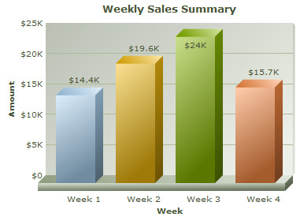
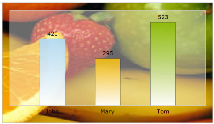
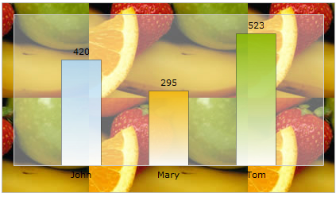
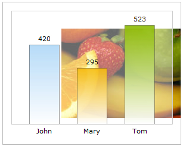
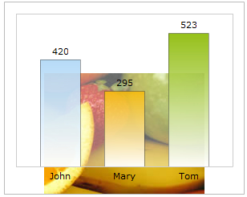
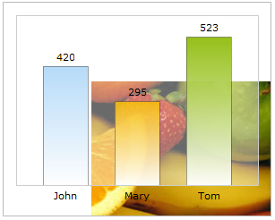
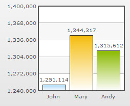
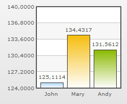
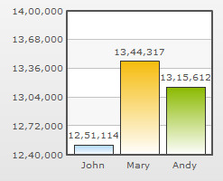

This section is meant for users who have implemented v3.x.y (e.g., 3.0.6, 3.0.7, 3.1.1 etc.) of FusionCharts in their applications and are now upgrading to FusionCharts XT (v3.3.0).
Here, we will discuss the following:
- Steps to upgrade to FusionCharts XT from FusionCharts v3.x.y
-
- Enabling your charts to run on iPad and iPhone and in devices where Flash Player is not available
- Converting all your charts from Flash rendering to JavaScript rendering
- Rendering pure JavaScript charts
- Creating dynamically resizable charts
- Using FusionCharts JavaScript Class
- Making use of new JavaScript events
- Changing individual chart attribute at run-time using JavaScript API
- Enabling managed printing in Firefox/Chrome/Safari/Opera
- Adding support for JSON data
- Using FusionCharts jQuery plugin to render chart
- Adding legends to Pie and Doughnut charts
- Increasing size of Legend icons
- Setting display modes of background image
- Alignment of background image
- Adding Quadrants and labels to Bubble and Scatter charts
- Advanced configuration of x-axis in Scatter and Bubble charts
- Regression lines in Scatter and Bubble charts
- Controlling maximum area alloted for x-axis labels on Bar charts
- Control alignment of caption and sub-caption
- Specifying y-axis minimum value (lower limit) for Stacked charts
- Plotting columns on right side of chart in 3D combination charts
- Manually controlling position of data values in line charts
- Recursive number scaling
- Configuring thousand separator position
- Hide zero plane value
- Important note regarding change in Zoom Line Compact JSON data format
All the features of FusionCharts XT (v3.3.0) are backward compatible with FusionCharts v3.2.x or earlier. Hence, upgrading is as easy as copy-pasting files. Listed below are the things that you need to take care of while upgrading:
- Copy all chart SWF files from Download Pack > Charts folder and replace your existing chart SWF files in your deployed folder
- Copy FusionCharts.js, FusionCharts.HC.Charts.js, FusionCharts.HC.js and jQuery.min.js from Download Pack > Charts folder and replace the existing JavaScript files in your deployed application folder
- Clear your browser cache (very important step)
In case, you are also using charts from PowerCharts XT or earlier version, you will need to download or update to the latest PowerCharts XT pack and copy FusionCharts.HC.PowerCharts.js from the Charts folder of the downloaded PowerCharts XT pack.
Moreover, if you are using charts from FusionWidgets XT v3.2 SR-2 or earlier version, you need to download or update to the latest FusionWidgets XT pack and copy FusionCharts.HC.Widgets.js from the Charts folder of the downloaded FusionWidgets XT pack.
Moreover, if you are using charts from FusionMaps XT v3.2 SR-1 or earlier version, you need to download or update to the latest FusionMaps XT pack and copy FusionCharts.HC.Maps.js and the map definition js files like FusionCharts.HC.world.js from the Maps folder of the downloaded FusionMaps XT pack.
The above steps will convert all your v3.x.y charts to FusionCharts XT. You don't have to modify any code, as all the charts are backward compatible. However, if you wish to make use of any new chart type or new features, then you will have to modify your code to include the same. Given below are details of code changes required for implementing some of the new features introduced in FusionCharts XT (v3.3.0).
FusionCharts XT boasts of a plethora of enhancements. To make use of the new and modified features, you will have to modify your code to include the same. Given below are details of code changes required for implementing some of the new features introduced in FusionCharts XT.
To get you started with FusionCharts XT, we will show you how to build a simple Column chart. Let's start with a simple "Weekly Sales Summary" for a month, which we will plot in 3D using a Column Chart. Once done, it should look as under, although with animation and interactivity when you view it live.

Follow the steps below to get started:
- Create a folder LearningFusionCharts on your hard-drive. We will use this folder as the root folder for building all FusionCharts XT examples.
- Create a folder named MyFirstChart inside the above folder. Inside the MyFirstChart folder, create a folder named FusionCharts.
- Copy FusionCharts.js, FusionCharts.HC.js, FusionCharts.HC.Charts.js and jquery.min.js files from Download Pack > Charts folder to FusionCharts folder.
- Specify the name of the chart type, that is the JavaScript alias. In this case we will use Column3D.
- If you want to render Flash charts, copy Column3D.swf from Download Pack > Charts folder to the FusionCharts folder. This SWF file is required to render the chart in Flash.
- Create an XML file » (Creating an XML file is as easy as creating a text file using Windows Notepad or any other text editor. It is actually a plain text file with extension - xml) in MyFirstChart folder with name Data.xml.
- Create the code given below (left), which is the XML-lized form of the sales data shown in the table (right). Copy the XML code to Data.xml file.
<chart caption='Weekly Sales Summary' xAxisName='Week' yAxisName='Amount' numberPrefix='$'> <set label='Week 1' value='14400' /> <set label='Week 2' value='19600' /> <set label='Week 3' value='24000' /> <set label='Week 4' value='15700' /> </chart>Week Sales Week 1 $14,400 Week 2 $19,600 Week 3 $24,000 Week 4 $15,700 - Create an HTML file weekly-sales.html in the same folder and copy-paste the code
<html> <head> <title>My First chart using FusionCharts XT</title> <script type="text/javascript" src="FusionCharts/FusionCharts.js"> </script> </head> <body> <div id="chartContainer">FusionCharts XT will load here!</div> <script type="text/javascript"><!-- var myChart = new FusionCharts( "Column3D", "myChartId", "400", "300", "0" ); myChart.setXMLUrl("Data.xml"); myChart.render("chartContainer"); // --> </script> </body> </html>
And that completes the recipe!
Open the file weekly-sales.html in a Web Browser » Internet Explorer, Firefox, Opera, Chrome or Safari (Mac, iPhone, iPad, and Windows) and you will see an animated Column 3D chart similar to the one below:
See it live!
Starting FusionCharts XT v3.3.0, JavaScript charts can be exported and saved to a server disk. To do so, you need to configure your own server. The sever should support PHP and JAVA (1.3 or above). Also, you need to place the FusionCharts PHP export handler and Apache Batik SVG Rasterizer library in your server.
The XML or JSON data will be as shown under:
<chart... exportAction='save' > ... </chart>or
"chart": {
...
"exportAction" : "save"
},
...
);
To know more on how to set up and configure the server click here.
FusionCharts XT v3.3.0 also allows you to customize the labels of the export context menu. By default, the labels appear as Download as PNG, Download as JPG, Download as PDF and Download as SVG. To achieve this, you need to use the exportFormats attribute. The attribute value should be a delimiter separated key-value pair. The delimiter character to be used is '|' (pipe character). The syntax for the attribute value exportFormats='KEY=Value|KEY=Value'. The XML or JSON data will look as under:
<chart... exportFormats='PNG=Export as High Quality Image|JPG|PDF=Export as PDF File|SVG' > ... </chart>or
"chart": {
...
"exportFormats" : "PNG=Export as High Quality Image|JPG|PDF=Export as PDF File|SVG"
},
...
);
In the above data, the labels of PNG and PDF has been customized. Since, no value has been set to JPG and SVG they will appear with its default label, which is Download as JPG and Download as SVG. The order of the options will appear as set in this attribute.
Note:If you do skip any export option in this attibute the context menu will not display that option. For example, if you set exportFormats='PNG=Export as High Quality Image|JPG|PDF=Export as PDF File' the context menu will appear without the SVG option since it is not mentioned in the attribute.
After you have made the above changes, your charts are automatically ready for iPad and iPhone and for all devices where Flash Player is disabled, not-installed or not-supported. This has been made possible by the new FusionCharts JavaScript Class , which provides automatic fallback to JavaScript charts (using FusionCharts.HC.js and FusionCharts.HC.Charts.js). FusionCharts JavaScript Class can automatically decide whether to render JavaScript charts or Flash charts.FusionCharts JavaScript class is capable of detecting whether the browser is running in iPad, iPhone, or iPod or in deivces where Flash Player is disabled, not-installed, or not-supported and it switches to pure JavaScript rendering architecture.
Click here to see a live sample in your iPad or iPhone.
If you wish to use JavaScript charting only (and not use Flash at all), you can convert your existing charts to pure JavaScript charts (HTML5) by adding a single line of code. All you need to do is write FusionCharts.setCurrentRenderer('javascript') before you call FusionCharts constructor in your existing implementation.
<html>
<head>
<title>My First chart using FusionCharts - Using JavaScript</title>
<script type="text/javascript" src="FusionCharts/FusionCharts.js"></script>
</head>
<body>
<div id="chartContainer">FusionCharts XT will load here!</div>
<script type="text/javascript"><!--
FusionCharts.setCurrentRenderer('javascript');
var myChart = new FusionCharts( "FusionCharts/Column3D.swf",
"myChartId", "400", "300", "0");
myChart.setXMLUrl("Data.xml");
myChart.render("chartContainer");
// -->
</script>
</body>
</html>
See it live!
Note : Many browsers restrict JavaScript from accessing local file system owing to security reasons. The JavaScript charts, when running locally, will not be able to access data provided as a URL. If you run the files from a server, it will run absolutely fine, though. When running locally, however, if you provide the data as string (using the Data String method), it works fine.
Starting FusionCharts XT - Service Release 3, you can specify the JavaScript chart alias (as listed in the Chart List page) instead of the chart SWF filename to create a pure JavaScript chart. The code snippet below demonstrates how this is achieved:
<html>
<head>
<title>Creating Pure JavaScript chart</title>
<script type="text/javascript" src="FusionCharts/FusionCharts.js"></script>
</head>
<body>
<div id="chartContainer">FusionCharts XT will load here!</div>
<script type="text/javascript"><!--
var myChart = new FusionCharts( "Column3D", "myChartId", "400", "300" );
myChart.setXMLUrl("Data.xml");
myChart.render("chartContainer");
// -->
</script>
</body>
</html>
See it live!
In the above code, instead of Column3D.swf we have specified Column3D, the JavaScript chart alias. Based on the JavaScript chart alias provided, FusionCharts JavaScript Class renders the respective JavaScript chart.
Also note that we have removed the line FusionCharts.setCurrentRenderer('javascript'); from the code. This is because, FusionCharts JavaScript Class automatically switches to JavaScript rendering mode whenever JavaScript chart alias is provided.
You can also specify JavaScript chart alias while using the Object as Constructor parameter through the type property as shown below:
var myChart = new FusionCharts( {
type: 'Column3D',
width: '400',
height: '300',
debugMode : false
});
All charts in FusionCharts XT can now resize automatically as per the changed size of the container element. The charts can accept width and height in percent (%) and scale in percent with respect to the containers' size. Whenever a container's size changes, the chart automatically resizes itself with respect to the new size of the container element. To achieve this, all you need to do is set percent values in while defining a chart width and height. Rest is taken care by the chart itself. For more details on dynamic-resizing, please see the Changing chart dimensions page from the Creating your first chart section. A sample chart constructor might look like this:
new FusionCharts("Column3D.swf","myChartId", "80%", "100%", "0");
In the example below, we have created a very basic sample where the chart will fill up the entire space of the Web browser and if the browser's size is changed, the chart will resize itself. Note the width and height declared for BODY and DIV elements using CSS.
<html>
<head>
<title>My First chart using FusionCharts
- Using dynamically re sizable chart</title>
<script type="text/javascript" src="FusionCharts/FusionCharts.js"></script>
</head>
<body style="height:100%;">
<div id="chartContainer" style="height:100%;" >
FusionCharts will load here</div>
<script type="text/javascript"><!--
var myChart = new FusionCharts("FusionCharts/Area2D.swf",
"myChartId", "100%", "100%", "0");
myChart.setXMLUrl("LargeData.xml");
myChart.render("chartContainer");
// -->
</script>
</body>
</html>
See it live!
In the above code we have:
- Set the height of the body to be 100%
- Set the height of the container DIV to 100%, which means that it will vertically fill up the body space of the HTML
- Set the chart's width and height to 100%
The chart being a direct child of the whole page, it will dynamically change its size as per the change in the width and height of the browser. You can apply the same concept with HTML containers instead of taking the whole page. All you need to do is put the chart inside the container setting percentage width and height.
FusionCharts JavaScript Class now provides you with a large set of APIs to work with. Using these functions you can do the following:
- Create pure JavaScript charts (not Flash)
- Use the object oriented JavaScript implementation methods
- Make use of new data providing functions like setXMLUrl, setXMLData, setChartData, setChartDataUrl
- Use the static function FusionCharts to access all chart instances present in a page
- Configure and create 'LinkedCharts' which is a smart drill-down feature introduced in v3.2
- Make use of the better printing support for all Mozilla based browsers using the PrintManager class
- Debug and manage errors
- Set properties of an existing chart using the setChartAttribute() function
- Provide chart data in JSON format using setJSONUrl,setJSONData, setChartData, setChartDataUrl functions
- Update an existing chart's data using chart's native AJAX capabilities or browser's AJAX support
- Use API to get data back from chart in XML/JSON/CSV format
- Check the rendering state of a chart using function like isActive()
- Duplicate an existing chart's configurations using the clone() function
- Remove and clean a chart object and free as much memory as possible using the dispose() function
- Make use of better and advanced JavaScript event model (using the addEventListener function) to listen to all events
Existing JavaScript implementations using setDataURL(), setDataXML() or FC_Rendered event will continue to function without any problem.
FusionCharts JavaScript class allows you to handle events using the advanced JavaScript event model. You can use the addEventListener() function to each chart object or global FusionCharts class to listen to various events related to chart loading, rendering, resizing, creating LinkedCharts, printing, error handling, etc. If you intend to make use of the new JavaScript events or methods exposed in v3.2, you will have to make the necessary modifications in your code. You need to get the chart reference and define the event listener function. You can define a function separately and pass the reference to the function to the addEventListener(). You can also declare an anonymous function along with the addEventListener() function call itself. The code below shows the two models:
<html>
<head>
<title>FusionCharts - listen to DrawComplete event</title>
<script type="text/javascript" src="FusionCharts/FusionCharts.js">
</script>
</head>
<body>
<div id="chartContainer">FusionCharts XT will load here!</div>
<script type="text/javascript"><!--
var myChart = new FusionCharts( "FusionCharts/Column3D.swf",
"myChartId", "400", "300", "0");
myChart.setXMLUrl("Data.xml");
myChart.render("chartContainer");
function myChartListener(event, parameter)
{
alert( event.sender.id + " has completed chart drawing" );
}
FusionCharts("myChartId").addEventListener ("DrawComplete" , myChartListener );
// -->
</script>
</body>
</html>
<html>
<head>
<title>FusionCharts - listen to DrawComplete event</title>
<script type="text/javascript" src="FusionCharts/FusionCharts.js">
</script>
</head>
<body>
<div id="chartContainer">FusionCharts XT will load here!</div>
<script type="text/javascript"><!--
var myChart = new FusionCharts( "FusionCharts/Column3D.swf",
"myChartId", "400", "300", "0");
myChart.setXMLUrl("Data.xml");
myChart.render("chartContainer");
FusionCharts("myChartId").addEventListener ("DrawComplete" ,
function(event, parameter)
{
alert( event.sender.id + " has completed chart drawing" );
}
);
// -->
</script>
</body>
</html>
See it live!
The above code listens to the DrawComplete event and shows a JavaScript alert when the event gets fired. To get details of each event please read FusionCharts XT and JavaScript > API Reference > Events page.
Existing JavaScript implementations using FC_Rendered or FC_Loaded events will continue to function without any problem.
FusionCharts JavaScript library provides an option to set a chart attribute at run-time. This is as easy as calling a simple function. You just need to get the chart handler object and call the setChartAttribute() function. Let's see a sample code where we change the caption of the chart:
var weekly_sales_chart = FusionCharts.items['JanuaryChartId']; weekly_sales_chart.setChartAttribute( "caption", "Updated Sales figures for the month of January" );
In the code above, we get the chart handler from FusionCharts.items Array passing the DOMId of the chart. Next, we call setChartAttribute() function and pass two parameters to it. The first parameter is the name of the attribute that needs to be changed. The second parameter provides the new value of the attribute that needs to be set. Here we pass "caption" as the attribute name and set its new value to "Updated Sales figures for the month of January".
In FusionCharts XT, whenever an attribute of a chart is changed, the entire chart is re-drawn without animation.
FusionCharts XT provides a feature that correctly prints charts from Firefox, Safari or other Mozilla, WebKit, and Gecko based browsers. We call it Managed Printing. This is managed by adding a single line of code in the page:
FusionCharts.printManager.enabled(true);
This feature, when enabled, prepares the charts in the page for printing. Once preparation is complete, you can print the page with all charts in the page either using File > Print menu of the browser or using code :
FusionCharts.printManager.managedPrint();
The Print Manager internally does the following to achieve this :
- Once a chart is rendered, it silently gathers all aspects of the image data of the present state of the chart
- It converts the image data into image using canvas HTML object
- It hides the canvas image below the chart
- When print is invoked, a parallel CSS based print media layout is created
- In this print media layout, the Flash chart is hidden and the canvas image is displayed
- This layout with the canvas image is sent to the printer for print
Note: Print Manager works only in browsers that supports canvas object.
Print Manager also fires events when it has all the charts ready for managed print. The code below shows how it works:
FusionCharts.addEventListener (
FusionChartsEvents.PrintReadyStateChange ,
function (identifier, parameter) {
if(parameter.ready){
alert("Chart is now ready for printing.");
document.getElementById('printButton').disabled = false;
}
});
See it live!
Note that the PrintReadyStateChange event is a global event. Thus, this event cannot be listened from individual chart instance. Only FusionCharts static class can listen to this event.
The parameters event argument contains a property - ready. This property returns true when the Print Manager is ready to print all charts in a page. Once true is returned by the event, we show a JavaScript alert message-box.The button which was disabled earlier is now enabled.
Now you can try printing from File → Print menu. You can also use a button or any function that calls the window.print() function.
You can also use the following code to print the whole page using FusionCharts JavaScript class:
FusionCharts.printManager.managedPrint();
Apart from XML, FusionCharts XT can also accept JSON data format. This functionality is provided by the FusionCharts.js JavaScript class. You can pass chart JSON data in one of the three formats: it can use a JSON URL/feed, a JSON Object (in JavaScript) or JSON String. The functions that help in accepting JSON data are setJSONUrl, setJSONData, setChartData, setChartDataUrl. Below are some examples of passing JSON data:
myChart.setJSONUrl("Data.json");
...
myChart.setJSONData {
"chart": {
"caption" : "Weekly Sales Summary" ,
"xAxisName" : "Week",
"yAxisName" : "Sales",
"numberPrefix" : "$"
},
"data" :
[
{ "label" : "Week 1", "value" : "14400" },
{ "label" : "Week 2", "value" : "19600" },
{ "label" : "Week 3", "value" : "24000" },
{ "label" : "Week 4", "value" : "15700" }
]
}
);
When running the charts from a local file system, JSON data will not work on certain browsers due to security limitations of AJAX. You will need to run the charts on a server (localhost or remote) to make it work.
Starting FusionCharts XT, you can create charts using jQuery syntax. This has been made possible using the introduction of FusionCharts jQuery plugin in this release. This plugin allows you to render FusionCharts XT anywhere within a Web page, update and retrieve chart data, update cosmetic and functional settings and use all existing features of FusionCharts XT.
Setting it up:
Setting up of FusionCharts jQuery plugin is as simple as putting an additional reference to the plugin file (FusionCharts.jqueryplugin.js) as shown below:
<script type="text/javascript" src="../Charts/FusionCharts.js"></script> <script type="text/javascript" src="../Charts/jquery.min.js"></script> <script type="text/javascript" src="../Charts/FusionCharts.jqueryplugin.js"></script>
- Copy all the required chart SWF files (from the Download Pack > Charts folder) to your preferred folder
- Copy FusionCharts.js and jquery.min.js from the Download Pack > Charts folder to the preferred folder
- To create JavaScript charts also copy FusionCharts.HC.js and FusionCharts.HC.Charts.js from the Download Pack > Charts folder to the preferred folder
You do not need to include FusionCharts.HC.js and FusionCharts.HC.Charts.js in your code. FusionCharts.js will automatically load these files based on requirement.
Now, let's check a few code snippets using FusionCharts jQuery plugin below:
Basic Usage:
The code snippet below shows how to use the insertFusionCharts method to render chart in element(s) having id - chartContainer. The parameters passed to this method are same as the parameters passed to FusionCharts JavaScript class constructor.
$("#chartContainer").insertFusionCharts({
swfUrl: "../FusionCharts/Column3D.swf",
dataSource: "February.xml",
dataFormat: "xmlurl",
width: "400",
height: "300",
id: "myChartFebID"
});
See it live!
The above code will render a Flash chart. If you wish to render a pure JavaScript chart, you only need to set the renderer property to javascript. A code snippet is shown below:
$("#chartContainer").insertFusionCharts({
swfUrl: "FusionCharts/Column3D.swf",
renderer : 'JavaScript',
width: "400",
height: "300",
id: "myChartId",
dataFormat: "xml",
dataSource: "<chart caption='Weekly Sales Summary' xAxisName='Week' " +
"yAxisName='Sales' numberPrefix='$'>" +
"<set label='Week 1' value='14400' />" +
"<set label='Week 2' value='19600' />" +
"<set label='Week 3' value='24000' />" +
"<set label='Week 4' value='15700' />" +
"</chart>"
});
See it live!
You can also pass JSON as data source as shown below:
$("#chartContainer").insertFusionCharts({
swfUrl: "FusionCharts/Column3D.swf",
width: "400",
height: "300",
id: "myChartId",
dataFormat: "json",
dataSource: {
"chart": {
"caption" : "Weekly Sales Summary" ,
"xAxisName" : "Week",
"yAxisName" : "Sales",
"numberPrefix" : "$"
},
"data" :
[
{ "label" : "Week 1", "value" : "14400" },
{ "label" : "Week 2", "value" : "19600" },
{ "label" : "Week 3", "value" : "24000" },
{ "label" : "Week 4", "value" : "15700" }
]
}
});
See it live!
If you wish to add a chart to the existing content of an HTML element, without replacing it, you can use the appendFusionCharts method as shown below. This adds a chart at the end of existing content of that element. A code snippet using this method is provided below:
$("#chartContainer").appendFusionCharts({
swfUrl: "../FusionCharts/Column3D.swf",
dataSource: "March.xml",
dataFormat: "xmlurl",
width: "280",
height: "240",
id: "myChartMarID"
});
See it live!
If you wish to add a chart to the beginning of an HTML element, without replacing the existing content, you can use the prependFusionCharts method as shown below:
$("#chartContainer").prependFusionCharts({
swfUrl: "../FusionCharts/Column3D.swf",
dataSource: "January.xml",
dataFormat: "xmlurl",
width: "280",
height: "240",
id: "myChartJanID"
});
See it live!
You can also retrieve or update a chart's setting using the attrFusionCharts method as shown below:
// Get the latest caption of the chart and show it as alert message
var oldCaption = $("#chartContainer").attrFusionCharts("caption");
alert("The existing title of the chart is " + oldCaption);
// Set a new caption of the chart [ updating a single attribute of the chart ]
$("#chartContainer").attrFusionCharts("caption": "Updated chart title");
// Set palette and paletteColors attributes [ updating multiple attributes of the chart ]
$("#chartContainer").attrFusionCharts({"palette": "5", "paletteColors": "D977B7"});
See these live!
You can also change chart type, update a chart with data or resize (along with many other settings) using the updateFusionCharts method as shown below:
Change chart type:
$("#chartContainer").updateFusionCharts({"swfUrl": "../Charts/Pie3D.swf"});
See it live!
Note that changing of chart type is only recommended for charts that use the same data format (single series, multi-series, etc.). When the chart type changes the data is retained internally by FusionCharts jQuery plugin
Update data:
$("#chartContainer").updateFusionCharts({"dataSource": "new/January.json", "dataFormat": "jsonurl"});
See it live!
Resize chart:
$("#chartContainer").updateFusionCharts({ width : 400, height : 350 });
See it live!
You can clone a chart using the cloneFusionCharts method as shown below:
$("#chartContainer").cloneFusionCharts( callbackFnAfterCloning, {width:300, height: 400} );
See it live!
Using :FusionCharts Selector
You can use a custom selector :FusionCharts to find all the FusionCharts objects present in a page. It can be used in the following ways:
- $(":FusionCharts") : This will return a jQuery array containing all the FusionCharts objects on the page
- $("#DashboardContent").find(":FusionCharts") : This will give all the FusionCharts objects (as jQuery array) which are inside the HTML element having id - DashboardContent
See it live!
Event handling:
You can use the jQuery bind method to attach event handlers to FusionCharts specific events. The example below shows how you can bind to DrawComplete event of FusionCharts:
$("#chartContainer").bind( "fusionchartsdrawcomplete", function (e, args) {
alert("Chart named " + e.sender.id + " has completed chart drawing." );
});
See it live!
Removing chart:
Starting FusionCharts XT Service Release 5, you can remove a chart using the disposeFusionCharts method as shown below:
$("#chartContainer").disposeFusionCharts();
For more details of setting up and using FusionCharts jQuery plugin, please go through the FusionCharts XT & jQuery section.
FusionCharts XT provides interactive legends for all Pie and Doughnut charts. Each slice's label is shown as legend text along with the legend icon. When you click the legend icon, the relevant Pie or Doughnut slice slides out from the chart. Re-clicking the icon causes the slice to slide in.
Legend is not active by default in Pie and Doughnut charts. You can enable legend adding showLegend = "1" in <chart> element of XML. The legend can be placed either at the bottom or right side of the chart.
FusionCharts XT provides interactive legend which most of the charts support. The interactive legend allows end users to click the legend icon to show or hide the particular data series.
Legends appear in all multi-series charts, stacked charts, combination, scroll charts, and in single series Pie and Doughnut charts. Interactive legend is not supported in Marimekko chart. Apart from being interactive, legend now provides visual icons pertinent to the data series, that is, column icon for a column data series. Generally, these icons are drawn at a size that appears best on the chart.
You can configure size of these icons using legendIconScale attribute of the <chart> element.
<chart legendIconScale='1.75' ...>
The scale value ranges from 0-5 where the default scale value is 1. Anything less than 1 reduces the size of the legend-icons on the chart. Any value bigger than 1 increase the size of the icons. Hence, .5 means half the size where as 2 means twice the size of the default icon size.
Note that the legendMarkerCircle attribute has been dropped in all the charts. This attribute used to set circular legend shapes. Due to the introduction of legend icons, which offer advanced visualization and interactive features, this feature has been deprecated.
It is now possible to display the chart's background images using stretch, tile, center, etc. display modes. To apply a display mode to the background image, you need to use the bgImageDisplayMode attribute in the <chart> element. For example:
<chart bgImageDisplayMode='Stretch' ...>
|  |
| Stretch - Expands the image to fit the entire chart area, without maintaining original image constraints |
 |
| Fit - Fits the image proportionately on the chart area |
 |
| Fill -Proportionately fills the entire chart area with the image |
|  |
| Tile - The image is repeated as a pattern on the entire chart area |
 |
| Center - The image is positioned at the center of the chart area |
 |
| none - the original image is placed at the top left corner of the chart background (default) |
It is now possible to configure the vertical and horizontal alignment of chart's background image. The attributes used to apply the alignments are bgImageVAlign (possible values are - top, middle and bottom) and bgImageHALign (possible values are left, middle and right) in the <chart> element.
<chart bgImageHAlign='top' bgImageVAlign='middle' ...>
 |
 |
 |
| bgImageVAlign='top' bgImageHAlign='left' |
bgImageVAlign='top' bgImageHAlign='middle' |
bgImageVAlign='top' bgImageHAlign='right' |
 |
 |
 |
| bgImageVAlign='middle' bgImageHAlign='left' |
bgImageVAlign='middle' bgImageHAlign='middle' |
bgImageVAlign='middle' bgImageHAlign='right' |
 |
 |  |
| bgImageVAlign='bottom'
bgImageHAlign='left' |
bgImageVAlign='bottom' bgImageHAlign='middle' |
bgImageVAlign='bottom' bgImageHAlign='right' |
It is now possible to add quadrants and their labels to Scatter and Bubble charts. To add quadrants, you need to use drawQuadrant='1' in the <chart> element of XML data. This makes the quadrant lines intercept exactly at the middle of the chart.
<chart drawQuadrant='1' ...>
Apart from setting the quadrant on, you can also set the interception position of the horizontal and vertical lines using two attributes - quadrantXVal and quadrantYVal. These two attributes accept values relative to x-axis and y-axis and act as the X and Y interception point.
<chart quadrantXVal='40' quadrantYVal='55' ...>
There are six attributes that configure the quadrant lines. These are quadrantLineColor, quadrantLineThickness, quadrantLineAlpha, quadrantLineIsDashed, quadrantLineDashLen, and quadrantLineDashGap.
Each quadrant can be set with a text label. We name each quadrant as 'top-left', 'top-right', 'bottom-left' and 'bottom-right'. To set label to each of these quadrants you need to set label values in these attributes - quadrantLabelTL, quadrantLabelTR, quadrantLabelBL, and quadrantLabelBR.
To add some padding space between quadrant labels and chart canvas borders, use the quadrantLabelPadding attribute.
It is now possible to apply advanced configuration to the x-axis labels of scatter and bubble charts. To configure the x-axis labels for scatter and bubble chart, you need to use the xAxisLabelMode attribute. The three configurable options of this attribute are:
- auto: This setting makes the chart automatically calculate a scale for x-axis and shows x-axis labels accordingly.
- categories: This setting shows explicitly defined x -axis labels
- mixed: This is a mixture of the two modes stated above. It shows both automatically defined and explicitly defined x-axis labels
The examples shown below discuss each mode in details:
An example data is given below:
<chart xAxisLabelMode='auto' caption='Income Expenditure Analysis' subcaption='(sample survey done among buyers of LCD TV)' xAxisName='Salary' yAxisName='Amount spent on LCD TV' >
<dataset color='000000'>
<set x='9200' y='1600' />
<set x='9900' y='1800' />
<set x='9500' y='1510' />
<set x='9700' y='1400' />
<set x='8100' y='1500' />
<set x='8600' y='1300' />
<set x='8300' y='1220' />
<set x='7800' y='1300' />
<set x='7800' y='1220' />
<set x='7000' y='1210' />
<set x='6000' y='1140' />
<set x='6000' y='1000' />
<set x='6200' y='950' />
<set x='5300' y='940' />
<set x='4700' y='1000' />
<set x='4800' y='947' />
<set x='4500' y='850' />
<set x='4000' y='870' />
<set x='3700' y='800' />
<set x='3100' y='800' />
<set x='4500' y='600' />
<set x='4000' y='660' />
<set x='3600' y='500' />
<set x='3400' y='450' />
<set x='3100' y='650' />
<set x='3100' y='600' />
<set x='3100' y='540' />
<set x='2800' y='460' />
<set x='2400' y='650' />
<set x='2300' y='540' />
<set x='3000' y='340' />
<set x='2000' y='280' />
<set x='2200' y='340' />
<set x='2000' y='180' />
</dataset>
</chart>
The chart for the above data will look as under:

Here, you do not need to specify the <categories>...<category> elements to generate the x-axis labels. Using the Auto mode, as shown in the above chart, the x-axis labels are automatically calculated and displayed.
<chart xAxisLabelMode='categories' caption='Income Expenditure Analysis' subcaption='(sample survey done among buyers of LCD TV)' xAxisName='Salary' yAxisName='Amount spent on LCD TV'>
<categories>
<category label='Low' x='1200' showVerticalLine='1' lineDashed='1'/>
<category label='Avg' x='6000' showVerticalLine='1' lineDashed='1'/>
<category label='High' x='9000' showVerticalLine='1' lineDashed='1'/>
</categories>
<dataset color='000000'>
<set x='9200' y='1600' />
<set x='9900' y='1800' />
<set x='9500' y='1510' />
<set x='9700' y='1400' />
<set x='8100' y='1500' />
<set x='8600' y='1300' />
<set x='8300' y='1220' />
<set x='7800' y='1300' />
<set x='7800' y='1220' />
<set x='7000' y='1210' />
<set x='6000' y='1140' />
<set x='6000' y='1000' />
<set x='6200' y='950' />
<set x='5300' y='940' />
<set x='4700' y='1000' />
<set x='4800' y='947' />
<set x='4500' y='850' />
<set x='4000' y='870' />
<set x='3700' y='800' />
<set x='3100' y='800' />
<set x='4500' y='600' />
<set x='4000' y='660' />
<set x='3600' y='500' />
<set x='3400' y='450' />
<set x='3100' y='650' />
<set x='3100' y='600' />
<set x='3100' y='540' />
<set x='2800' y='460' />
<set x='2400' y='650' />
<set x='2300' y='540' />
<set x='3000' y='340' />
<set x='2000' y='280' />
<set x='2200' y='340' />
<set x='2000' y='180' />
</dataset>
</chart>
The chart for the above data will look as under:

In the above chart, the labels displayed on the x-axis are derived from label attributes from the <category> elements of the <categories> element. The positions of the labels on the x-axis are defined by the x attribute of the <category> elements.
<chart caption='Portfolio of Investments in Equities' xAxisLabelMode='mixed'... >
The chart with the same data which we passed using the Categories mode is shown below with the Mixed mode:
In the above chart, with Mixed mode, the x-axis displays both the explicitly defined labels and the automatically calculated labels through the <category> elements.
In Scatter and Bubble charts, you can now show regression lines to calculate and draw the average trend lines for all the data points. To display the regression line for all the data-points of a dataset, you need to declare the attribute showRegressionLine='1' in that <dataset> element. In case you wish to show all regression lines for all the datasets, you can declare showRegressionLine='1'in the <chart> element. An example is shown below:
<chart showRegressionLine="1" . . . >
The following scatter chart draws a regression line:

For more detailed discussion on Regression Line please read Quick Chart configuration > Bubble & Scatter Chart page
All Bar charts now provide a better management of long x-axis labels. Now, you can control the maximum width that the labels should take. You need to use a new attribute - maxLabelWidthPercent which limits the maximum width of x-axis labels.
<chart maxLabelWidthPercent='40' ...>
The attribute takes value in percent with respect to the whole chart. This prevents the longer labels from taking more space than the chart canvas, which otherwise might have allowed very little space for the chart to render.
In case the text of a label is still bigger than the allotted width, the label gets truncated with an ellipse (...) added as suffix. However, when hovered over the label, a tool tip appears, showing the full label in it. Wrapping of labels is also done, depending on how much height is available per label.
The default value of maxLabelWidthPercent is 65. In case all labels are smaller than the calculated width, as per this attribute, this value does not get applied and the chart calculates the best value.
It is now possible to set alignment of chart caption and sub caption with respect to the chart canvas. You can achieve this using align attribute in Font style definition. This attribute is only applicable for CAPTION and SUBCAPTION objects of the chart. Let us see an example which set left alignment to the caption and right alignment to the sub caption.
<styles>
<definition>
<style name='LeftAlignCaption' type='font' align='left'/>
<style name='RightAlignSubCaption' type='font' align='right'/>
</definition>
<application>
<apply toObject='CAPTION' styles='LeftAlignCaption' />
<apply toObject='SUBCAPTION' styles='RightAlignSubCaption' />
</application>
</styles>
{
...
"styles": {
"definition": [
{
"name": "LeftAlignCaption",
"type": "font",
"align": "left"
},
{
"name": "RightAlignSubCaption",
"type": "font",
"align": "right"
}
],
"application": [
{
"toobject": "CAPTION",
"styles": "LeftAlignCaption"
},
{
"toobject": "SUBCAPTION",
"styles": "RightAlignSubCaption"
}
]
}
}
Now it is possible to set a minimum value of the y-axis of all the stacked charts. For all single y-axis charts, the yAxisMinValue attribute is used to set this. In Dual Y Axis charts pYAxisMinValue can be set for all charts aligned to Primary y-axis.
<chart yAxisMinValue='-100' ...>
or
<chart pYAxisMinValue='-100' ...>
Normally, the column data series in 3D charts with dual y-axis are plotted on the primary axis and appear at the left side of the canvas. Now, you can swap the primary axis to the right by setting primaryAxisOnLeft attribute of <chart> element. The example below shows how you can set the primary axis to right side of the chart.
<chart primaryAxisOnLeft='0' ...>
In order to stop clutter and overlapping of anchor-values of a line chart, FusionCharts XT provides a attribute - valuePosition. If you have opted to show data values on the chart, this attribute lets you adjust the vertical alignment of data values with respect to dataplots. By default, this attribute is set to AUTO mode in which the alignment of each data value is determined automatically based on the position of each plot point. When the mode is set to 'ABOVE', data values are displayed above the plot points unless a plot point is too close to the upper edge of the canvas. In the BELOW mode, data values are displayed below the plot points unless a plot point is too close to the lower edge of the canvas. The attribute can be set in the <chart> element or <set> element of the chart XML. If the attribute is given in the <set> element, it overrides the global attribute value set in the <chart> element. The sample data below shows how you can use this attribute:
<chart showValues='1' valuePosition='auto' rotateValues='1'
caption='Monthly Revenue' subcaption='Month' yAxisName='Revenue' numberPrefix='$' >
<set label='Jan' value='420000' />
<set label='Feb' value='910000' />
<set label='Mar' value='720000' valuePosition='bottom' />
<set label='Apr' value='550000' valuePosition='bottom' />
<set label='May' value='810000' valuePosition='above' />
<set label='Jun' value='510000' valuePosition='auto' />
</chart>{
"chart":{
"showvalues":"1",
"valueposition":"auto",
"rotatevalues":"1",
"caption":"Monthly Revenue",
"subcaption":"Month",
"yaxisname":"Revenue",
"numberprefix":"$"
},
"data":[
{ "label":"Jan", "value":"420000" },
{ "label":"Feb", "value":"910000" },
{ "label":"Mar", "value":"720000", "valueposition":"bottom" },
{ "label":"Apr", "value":"550000", "valueposition":"bottom" },
{ "label":"May", "value":"810000", "valueposition":"above" },
{ "label":"Jun", "value":"510000", "valueposition":"auto" }
]
}
Please note the use of valuePosition in chart global settings as well as valuePosition in each dataplot. The settings provided in dataplot overrides the settings provided on the chart global settings.
FusionCharts XT-Service Release 3 introduces the Recursive Number Scaling feature. Recursive number scaling comes into the picture when you have number scales defined for your chart. It helps you display the chart data better by breaking-up the predefined number scale into smaller sections. For example, in a chart where time is being plotted, you can display 3.87 days as 3 days, 20 hours, 52 minutes and 25 seconds.
Let us jump to an example straightaway to understand this better.
Let us build a chart which indicates the time taken by a list of automated processes. Each process in the list can take time ranging from a few seconds to few days. And we have the data for each process in seconds itself. Now, if we were to show all the data on the chart in seconds only, it will not appear too legible. What we can do is build a scale indicating time and then specify it to the chart. This scale will look something as under:
60 seconds = 1 minute
60 minute = 1 hr
24 hrs = 1 day
7 days = 1 week
We can define the same in our chart using:
<chart defaultNumberScale='s' numberScaleValue='60,60,24,7' numberScaleUnit='min,hr,day,wk' ... >
Please see the Number Scaling page for more details on how to build a number scale. Now let us consider the data below:
<chart defaultNumberScale='s' numberScaleValue='60,60,24,7' numberScaleUnit='min,hr,day,wk'> <set label='A' value='38' /> <set label='B' value='150' /> <set label='C' value='81050' /> <set label='D' value='334345' /> <set label='E' value='534345' /> </chart>
{
"chart": {
"defaultnumberscale": "s",
"numberscalevalue": "60,60,24,7",
"numberscaleunit": "min,hr,day,wk"
},
"data": [
{
"label": "A",
"value": "38"
},
{
"label": "B",
"value": "150"
},
{
"label": "C",
"value": "81050"
},
{
"label": "D",
"value": "334345"
},
{
"label": "E",
"value": "534345"
}
]
}
Notice how 22.51 hours is converted to 22 hrs, 30 mins and 50 s; 3.87 days to 3 days, 20 hrs, 52 mins and 25 s. This chart makes use of recursive number scaling and after converting the time in seconds to say hours, whatever is left over is not converted into decimals and shown. It is rather converted into smaller units of time and broken down as far as possible - so the remaining seconds are first converted to minutes and then when the seconds are too few to be converted into minutes, they are displayed in seconds itself. This gives us a fair idea of how much time was used for each task.
To use recursive number scaling, all you have to do is set <chart ... scaleRecursively='1' .. >.
The entire XML/JSON for the chart above is:
<chart scaleRecursively='1' defaultNumberScale='s' numberScaleValue='60,60,24,7' numberScaleUnit='min,hr,day,wk'>
<set label='A' value='38' />
<set label='B' value='150' />
<set label='C' value='81050' />
<set label='D' value='334345' />
<set label='E' value='534345' />
</chart>
{
"chart": {
"scalerecursively": "1",
"defaultnumberscale": "s",
"numberscalevalue": "60,60,24,7",
"numberscaleunit": "min,hr,day,wk"
},
"data": [
{
"label": "A",
"value": "38"
},
{
"label": "B",
"value": "150"
},
{
"label": "C",
"value": "81050"
},
{
"label": "D",
"value": "334345"
},
{
"label": "E",
"value": "534345"
}
]
}
You can also control the levels of recursion. Suppose in the above chart, instead of 3 days, 20 hrs, 52 mins and 25 s, you are pretty happy with showing 3 day, 20 hrs itself either for space constraints or some other good reason. You can control the levels of recursion for all the numbers on your chart using the maxScaleRecursion attribute. Suppose you want only two levels of recursion, then set <chart ... maxScaleRecursion='2'>. This will convert the above chart to:

Notice how all the numbers on the chart are using a maximum of two time units - the rest have been truncated. When you want all the units of a number to be shown on the chart, you can either omit the maxScaleRecursion attribute or set it to -1.
By default, all the units of a number are separated by a space. You can customize the separator using the scaleSeparator attribute. For example, setting scaleSeparator=', ' will separate each unit with a comma as shown below:

Note:
For Scatter and Bubble charts, xScaleRecursively, xMaxScaleRecursion and xScaleSeparator attributes are used to scale the numbers recursively on the X-Axis. These attributes will work only when the xAxisLabelMode attribute is set to AUTO or MIXED.
To scale the numbers recursively on the Secondary Y-Axis in a Dual Y-Axis chart, the attributes sScaleRecursively, sMaxScaleRecursion and sScaleSeparator are used.
FusionCharts XT automatically decides the position of the thousand separator. By default, the thousand separator is placed after every three digits from right. A chart with default thousand separator position will look as under:

Starting FusionCharts XT -Service Release 3, you can customize the position of the thousand separator and place it as required. To place the thousand separator in custom positions you need to use the thousandSeparatorPosition attribute. Shown below is a chart with the thousand separator placed after four digits from right:

For the above chart, the attribute thousandSeparatorPosition is set to '4'. So, the thousand separator (,) is placed after every four digits starting from right.
You can also set multiple values (separated by comma) to this attribute, instead of a single value. Thus, you can specify complex thousand separator positions. For example, setting multiple values you can display numbers in Indian currency format, where the first thousand separator (for thousand) is placed after three digits from right and then onwards the thousand separator is placed after every two digits. Shown below is an example chart displaying Indian currency format:

In the above chart, we have set thousandSeparatorPosition='2,3'. So, the thousand separator is first placed after 3 digits starting from right and then onwards after every two digits. Given below are some sample combinations of values which can be set to this attribute:
| Value set | Description | Example |
| thousandSeparatorPosition="0" | When this attribute is set to 0, it takes the default value, which is 3, and places the separator after every three digits starting from right.
Rule: When zero is specified as the thousand separator position, it assumes the default value, which is 3. |
1,344,317,518 |
| thousandSeparatorPosition="2" | When this attribute is set to 2, the thousand separator is placed after every two digits starting from right. | 13,44,31,75,18 |
| thousandSeparatorPosition="4" | When this attribute is set to 4, the thousand separator is placed after every four digits starting from right. | 13,4431,7518 |
| thousandSeparatorPosition="1,2" | In this case, first the thousand separator is placed after two digits from right. Then onwards the separator will be placed after every digit. | 1,3,4,4,3,1,7,5,18 |
| thousandSeparatorPosition="1,2,3" | In this scenario, first the separator will be placed after three digits from right, then the separator will be placed after two digits and then onwards it will be placed after every digit. | 1,3,4,4,3,17,518 |
| thousandSeparatorPosition="3,1,0" | In this scenario, the value 0 will be replaced by the default value 3. So, the thousand separator will be first placed after three digits from right. Then the separator is placed after one digit. Then onwards it will be placed after every three digits.
Rule: When zero is specified as the first thousand separator position in a comma separated list of thousand separator positions, it assumes the default value, which is 3. |
134,431,7,518 |
| thousandSeparatorPosition="1,0,2" | This is a special case where 0 is used as the second value. In this scenario, first the thousand separator is placed after two digits. Next, the value 0 assumes the previous value, which is 2. Hence, the separator will again be placed after two digits and then onwards it will be placed after every digit.
Rule: When zero is specified NOT as the first thousand separator position in a comma separated list of thousand separator positions, it assumes the previous value from the list. |
1,3,4,4,3,1,75,18 |
| thousandSeparatorPosition="0,1,3" | In this scenario, first the thousand separator is placed after three digits. Then it is placed after every digit. Now, the value 0 assumes the previous value, 1 and rest of the separators are placed after every digit.
Rule: When zero is specified NOT as the first thousand separator position in a comma separated list of thousand separator positions, it assumes the previous value from the list. |
1,3,4,4,3,1,7,518 |
Note: Any negative value set to this attribute will be converted to a positive value. For example, thousandSeparator="-2" will be converted to thousandSeparator="2".
You can also opt to show or hide the value on which the zero plane exists on the y-axis. To do so, you need to set the attribute showZeroPlaneValue='0' in the <chart> element. A chart with and without zero plane value is displayed below:
 |
 |
Chart displaying zero plane value |
Chart not displaying zero plane value
|
Note: In Dual Y-Axis charts showPZeroPlaneValue='0' hides the zero plane value for the Primary Y-Axis and showSZeroPlaneValue='0' hides the zero plane value for the Secondary Y-Axis.
To overcome a browser related issue, we had no options but to change the Compact JSON data format for Zoom line chart. The changes are listed below:
- Change in the categories property: The list of categories are passed as a single string as the value of the categories property. For example, "categories": "Jan|Feb|Mar|Apr|May|Jun|Jul|Aug|Sep|Oct|Nov|Dec"
- Change in the data property of the dataset property: The list of data values are passed as a single string as the value of the data property. For example, "data": "27400|29800|25800|26800|29600|32600|31800|36700|29700|31900|34800|24800"
The JSON data below highlights the difference:
{
"chart":{
"caption":"Web visits",
"compactdatamode":"1",
"dataseparator":"|"
},
"categories":"Jan|Feb|Mar|Apr|May|Jun|Jul|Aug|Sep|Oct|Nov|Dec",
"dataset":[{
"seriesname":"2006",
"data":"27400|29800|25800|26800|29600|32600|31800|36700|29700|31900|34800|24800"
},
{
"seriesname":"2005",
"data": "10000|11500|12500|15000|11000|9800|11800|19700|21700|21900|22900|20800"
}
]
}
{
"chart":{
"caption":"Web visits",
"compactdatamode":"1",
"dataseparator":"|"
},
"categories": [{ "category":[ "Jan|Feb|Mar|Apr|May|Jun|Jul|Aug|Sep|Oct|Nov|Dec" ] } ],
"dataset":[{
"seriesname":"2006",
"data": [ "27400|29800|25800|26800|29600|32600|31800|36700|29700|31900|34800|24800" ]
},
{
"seriesname":"2005",
"data": [ "10000|11500|12500|15000|11000|9800|11800|19700|21700|21900|22900|20800" ]
}
]
}